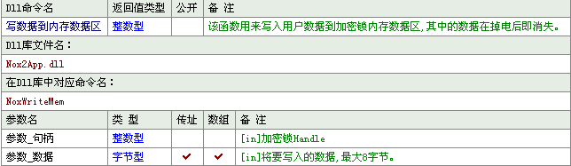

*该例程针对“龙脉NOX2单机锁”型加密狗如（图-1）为例进行详解
（图-1）
㈠.制作
1.制作思路：
对于NOX2型有读写操作函数，其记忆内存有4个区，每个区64字节可读写，大大方便了编程人员。有时可以用此功能进行一些数据的记录，如使用次数的记录，或重要标记、重要数据的记录等操作。加密狗应用程序是通过对API 的调用实现的，NOX2 应用程序 API 的调用是有顺序的，软件厂商在软件中使用时应遵循该规则。
2.制作详解：
（1）准备工作
龙脉NOX2加密狗在使用之前最好设置一下密码，密码的设置规则是从高级到低级，即：超级密码→用户密码→应用程序标识，使用的时候要从低级到高级调用，即：应用程序标识→用户密码→超级密码。
设置的方法也非常简单，插入加密狗，运行光盘中附带的管理工具，
例如：在管理工具中设置如下：
种子码：B041701DF4BC4F50B003AB1B8C1AD8DD
用户密码：a01a1a06df58e20d9924a44e8f757711
程序标识：F4BC4F50
如（图-2）所示：
（图-2）
上图中的超级密码初始化是多个F字母，需要您修改，可以随机生成，并且备份在你的一个文档中。超级密码不能公开，要机密保存，不可以写在程序代码中，这样就保证了你的加密狗与其他的加密狗之间的区别。
（2）程序界面设计
按照（图-3）所示添加窗口及组件，所有的编辑框均为普通的编辑框，所有的按钮均为普通按钮。
（图-3）
（3）取十进制
通过上述取得“应用程序标识”后，下面就可以调用“程序标识”检查是否插上加密狗了。由于“应用程序标识”是十六进制的，编程中要转换成十进制。程序中用到了一个“取十进制”的自定义子程序， 易语言编程代码如（图-4）
（图-4）
（4）查找加密狗功能
第一步需要实现的功能就是检查电脑上是否插入了龙脉加密狗，如果“程序集_返回值=0”表示已经找到加密狗 ，易语言编程代码如（图-5）
（图-5）
对应DLL命令定义表如（表-1）。
（表-1）
上面的命令执行后，取得了一个句柄，handles。NOX2最大支持同时插8支USB加密狗。上面是根据“应用程序标识”进行的检查，因此如果你插入不同的8支加密狗，就会严格找到那只相符合的加密狗。
如你写了很多不同类型的软件，这样为你的不同软件分配不一样的“应用程序标识”，这样就使加密狗的应用程序标识与你的软件一一对应，区别开来，然后你可以用不同的“应用程序标识”注册不同软件的用户。
运行效果如（图-6）。
（图-6）
（5）打开加密狗功能
找到加密狗后还要先打开加密狗，以进一步操作，NoxOpen的第2个参数使用到了“用户密码”，用户密码在NOX2中是通过种子码生成的，你需要记录下来备用。
使用函数：long NoxOpen(long nKeyHandle, char * userPin )；
在找到加密锁后，可通过加密锁的Handle及正确的用户密码来打开加密锁，只有在正确打开加密锁后才可以进行读写等操作。
参数1：整数型，通过NOXFIND取得的加密锁句柄数组之一. [in]加密锁Handle
参数2：文本型，用户密码，[in]用户密码（通过设号工具事先进行设置）
该函数必须与NoxClose成对使用。
易语言编程代码如（图-7）所示 。
（图-7）
对应DLL命令定义表如（表-2）。
（表-2）
（6）写入临时内存数据功能
使用函数：long NoxWriteMem(long nKeyHandle,unsignedchar *pBuffer)；
该函数用来写入用户数据到加密锁内存数据区，其中的数据在关闭电脑后即消失。
参数1：整数型。加密锁句柄,通过NOXFIND取得的加密锁句柄数.[in]加密锁Handle
参数2：字节型数组,8位长,[in]将要写入的数据,最大8字节。
内存区（几个字节）中的数据掉电后即消失，也就是说关闭电脑后，数据将不再存在，只用于临时读取资料用。
只有打开加密锁后才可以调用该函数 ，易语言编程代码如（图-8）
可用longNoxReadMem函数读出此数据。
注意：现在有的破解组织推出了加密狗共享器，因此使用这个函数随机取得一个固定数或字符串，写到加密狗内存中，这样当客户用了加密狗共享器时，会检查到有一个不同的数或字符串。
（图-8）
对应DLL命令定义表如（表-3）。

（表-3）
（7）读临时内存数据
使用函数：long NoxReadMem(long nKeyHandle,unsigned char* pBuffer)；
该函数用来读取加密锁内存数据区，在调用该函数之前，应该先最少分配8字节大小的存取数据的数据区。只有在打开加密锁后才可以调用该函数。
参数1:整数型,加密锁句柄,通过NOXFIND取得的加密锁句柄数.[in]加密锁Handle
参数2:字节型数组,8位长,[out]读取的结果存储在该参数所指定的数据区内，NOX内存区大小为8字节，在使用前应分配好合配大小的数据区以保证能够正确的容纳相应的数据。
内存区（几个字节）中的数据掉电后即消失。也就是说关闭电脑后，数据将不再存在，只用于临时读取资料用，易语言编程代码如（图-9）。
（图-9）
对应DLL命令定义表如（表-4）。
（表-4）
（8）写入NOX2加密锁中的记忆数据
NOX2加密狗内有四个区，每个区64字节的可读写区。大家可以直接用管理工具直接写入，或用批量工具直接写入，当然，也提供了API函数来读写这四个区。可以在管理工具中设置NOX2加密锁的四个区的读写属性，在此设置为既可以读，也可以写的“读写属性”。如果你设置为只读属性，将只能读不能写。
NOX2管理工具运行后如（图-10）所示 。
（图-10）
使用函数：long NoxWriteStorage(long nKeyHandle,long page, unsigned char * pBuffer )；
该函数用来写入加密锁掉电保持数据区（FLASH），在调用该函数之前，应该先分配最少64字节的存储数据的数据区。
参数1:整数型,通过NOXFIND取得的加密锁句柄数组之一. [in]加密锁Handle
参数2:整数型,[in] 页号, 支持4页(0,1,2,3)
参数3:字节型数组,64位长, [Out] 读取的结果存储在该参数所指定的数据区内，NOX2的掉电保持区的大小为64字节，因此在使用前应分配好合配大小的数据区以保证能够正确的容纳相应的数据。
只有在打开加密锁之后，才可以调用该函数。掉电保持数据区:指关闭电脑后数据还存在于加密狗中 ，下次开电脑数据还存在，易语言编程代码如（图-11）。
（图-11）
对应DLL命令定义表如（表-5）。
（表-5）
（9）读入NOX2加密狗中的记忆数据
使用函数：long NoxReadStorage(long nKeyHandle ,long page, unsigned char * pBuffer )；
该函数用来读取加密锁掉电保持数据区（FLASH），在调用该函数之前，应该先分配最少64字节的存储数据的数据区。只有在打开加密锁之后，才可以调用该函数。掉电保持数据区:指关闭电脑后数据还存在于加密狗中,下次开电脑数据还存在。
参数1：整数型，通过NOXFIND取得的加密锁句柄数组之一. [in]加密锁Handle
参数2：整数型，[in] 页号, 支持4页(0,1,2,3)
参数3：字节型数组，64位长，[Out] 读取的结果存储在该参数所指定的数据区内，NOX2每一页的掉电保持区的大小为64字节，因此在使用前应分配好合配大小的数据区以保证能够正确的容纳相应的数据，易语言编程代码如（图-12） 。
（图-12）
对应DLL命令定义表如（表-6）。
（表-6）
下面是易语言程序的运行效果，如（图-13）所示。
（图-13）
（10）关闭加密狗
使用函数：longNoxClose(longnKeyHandle)；
该函数用来关闭加密锁，必须与NoxOpen成对使用。加密锁在关闭后必须重新再次打开才可以进行其他读写的操作。
参数1:整数型,加密锁句柄,通过NOXFIND取得的加密锁句柄.[in]加密锁Handle
易语言编程代码如（图-14）。
（图-14）
对应DLL命令定义表如（表-7）。
（表-7）
（二）附录
一．NOX2型加密锁介绍
NOX2加密锁是北京世纪龙脉公司基于NOX加密锁研发的一套先进的软件保护产品，它是连接在计算机USB端口的硬件设备，外形小巧。通过它可以保护该软件不被非法复制和非授权访问和使用。
NOX2 加密锁为标准的HID设备，无需安装驱动，操作系统直接支持，因此无需安装硬件驱动，直接连接到计算机的USB端口即可在程序中使用，省去安装硬件驱动所带来的兼容性的风险。NOX2型加密锁内置4个64字节的可读写掉电保持存储区和8字节内存区，其中4个掉电保持存储区支持读写属性控制 ，用户可灵活地控制每个分区的访问方式,掉电保持分区支持写10万次，读取次数不限，因此用户应避免频繁进行写操作，可根据具体的使用环境来决定如何使用该存储区；NOX2的内存区可任意读写，用户可用于在软件运行过程中存储一些用于随机检测的数据，该数据区在掉电后数据即丢失。
二．NOX２系列锁基础知识
1．超级密码
NOX的超级密码为一个32字节的字符串，NOX自带了密码生成工具以保证每次生成的密码串是不同的且是唯一的，在需要修改超级密码时请使用自带的密码生成工具来生成。超级密码具有最高权限，可以修改用户密码，修改掉电保持数据区等，该超级密码出厂设置默认为32个F（即“FFFFFFFFFFFFFFFFFFFFFFFFFFFFFFFF”） ，软件厂商在分发NOX加密锁之前，可修改该密码，但应妥善保存该密码，如果尝试15次失败后，加密锁将自动锁死，此时必须重新插上重新进行操作。
注意：超级密码由编程人员保密存放，不得泄露。不要将超级密码写在软件代码中或文档中提供给用户，从而保证其安全性。
2．种子码
NOX2的种子码为一个32字节的字符串，种子码用于与超级密码一起生成用户密码，用户密码用于最终的软件中，这样就保证了用户密码的安全性。
3．用户密码
用户密码由超级密码和种子码生成, 这样可保证用户密码的安全性, 同时该密码用于打开加密锁并读取其中的数据，对于掉电保护存储区，如果设置为只读权限, 则加密锁密码只有读取权限，而不允许修改；如果设置为可读写,则加密锁密码可对该存储区进行读写操作. 对于内存区，加密锁密码正确后即可进行读写。
通过设号工具可以很容易通过超级密码和种子码生成该密码
用户密码将用于软件中对NOX2进行相应的操作。
用户密码错误三次后，加密锁自动锁死，需要拔下重新插上并重新运行软件。
注意：用户密码会写在程序代码中，最好分散存放及采用异或等方法打乱隐藏，以防止破解者轻易找到破解。
4．应用程序标识
该标识用于查找指定应用程序对应的加密锁 ，建议用户为不同的应用程序设置不同的标识，软件厂商通过设号工具来修改应用程序标识。应用程序标识出厂设置为0xFFFFFFFF(即-1).
5．掉电保持数据区
加密锁内置4个64字节的掉电保持数据区(分页)，用户可分别对这4页数据区进行读写属性的设置。该数据区掉电后不会丢失，用户可以对该数据区进行读写操作，设置为只读的数据区将不允许进行写操作。
6．内存区
加密锁内置的为用户分配的内存区 ，可用于临时存放数据，电脑关闭后数据不保存，NOX提供8字节的内存区。
7．唯一ID
每个加密锁拥有硬件唯一ID，并支持相应的API来读取ID。
8．加密锁句柄HANDLE
加密锁HANDLE用于识别系统中的每个加密锁，API操作需要通过HANDLE来指定是操作哪一个加密锁。通过调用NoxFind系列函数来获得系统中所有的加密锁及Handle，通过Handle来对指定的加密锁进行操作。
注意：Handle 是动态的，每调用一次NoxFind，加密锁的Handle就会重新分配，上次得到的Handle就不能再使用。
三．NOX２加密狗API手册
下面列出了NOX２所支持的所有应用程序API及详细说明。
1．NoxFind函数
|
Long NoxFind(long nAppID,long * nKeyHandles,long * nKeyNum)； |
|
|
Parameters |
|
|
NappID |
[in]应用程序标识 |
|
NkeyHandles |
[out]当前系统连接的所有NOX加密锁Handle数组，NOX最大支持同时插8支，因此在调用该函数之前，应分配一个最少8个元素long型数组用来存储每一个加密锁的Handle |
|
NkeyNum |
[out]找到的NOX加密锁个数，如果没找到为0 |
|
ReturnValue |
|
|
0 |
成功，nKeyHandles数组中保存了所有加密锁Handle |
|
>0 |
失败，未找到，系统中未连接NOX加密锁，同时nKeyNum为0 |
功能说明：long NoxFind(long nAppID,long * nKeyHandles,long *nKeyNum)；
查找系统中指定“应用程序标识”的所有NOX2加密锁句柄Handle，如果失败，则该系统未连接该NOX2加密锁。加密锁句柄Handle用来标识每一个加密锁。
参数1:整数型,十进制数值,“应用程序标识”在设号工具中设置,并与第一个参数等同。
参数2:整数型数组,8个数组成员.[out]当前系统连接的所有NOX加密锁Handle数组，NOX最大支持同时插8支，因此在调用该函数之前，应分配一个最少8个元素long型数组用来存储每一个加密锁的Handle。
参数3:整数型,返回加密锁个数,[out]找到的NOX加密锁个数，如果没找到为0
NOXFind是首先需要调用的函数，调用成功后，本程序中所有加密锁的Handle都会重新分配，原有Handle自动失效，因此如果在系统中需多次调用该函数，请记得先结束在原有Handle上的所有操作（可通过调用NoxClose），同时在以后的其它函数中使用新的Handle。“应用程序标识”在设号管理工具中设置。
|
Long NoxGetLastError()； |
|
|
Parameters |
|
|
无 |
|
|
ReturnValue |
|
|
最近一次操作的错误码。 |
|
使用说明：longNoxGetLastError()；
每个API都有一个返回值，通常返回值为0表示成功，返回值为1表示失败，当返回失败后，可以使用错误码API来获得具体错误原因。当API调用失败时，可使用该函数来获得失败具体原因，该函数只是返回错误码，如果想要知道错误码的具体信息，请从附录中进行查找。
本命令没有参数。
注意：该API获得最后一次操作的结果错误码 。
3．NoxOpen函数
|
Long NoxOpen(long nKeyHandle,char * userPin)； |
|
|
Parameters |
|
|
NKeyHandle |
[in]加密锁Handle |
|
UserPin |
[in]用户密码（通过设号工具进行设置） |
|
ReturnValue |
|
|
0 |
成功,加密锁打开 |
|
>0 |
失败，可使用NoxGetLastError来获得错误码。 |
功能说明：long NoxOpen(long nKeyHandle,char * userPin)；
在找到加密锁后，可通过加密锁的Handle及正确的用户密码来打开加密锁，只有在正确打开加密锁后才可以进行读写等操作。
参数1:整数型,加密锁句柄,通过NOXFIND取得的加密锁句柄数组之一.[in]加密锁Handle
参数2:文本型,用户密码,[in]用户密码（通过设号工具事先进行设置）
该函数必须与NoxClose成对使用。
4．NoxClose函数
|
Long NoxClose(long nKeyHandle)； |
|
|
Parameters |
|
|
nKeyHandle |
[in]加密锁Handle |
|
ReturnValue |
|
|
0 |
成功,加密锁关闭 |
|
>0 |
失败，可使用NoxGetLastError来获得错误码。 |
使用说明：long NoxClose(long nKeyHandle)；
该函数用来关闭加密锁，加密锁在关闭后必须重新再次打开才可以进行其他读写的操作。
参数1:整数型,加密锁句柄,通过NOXFIND取得的加密锁句柄.[in]加密锁Handle
该函数必须与NoxOpen成对使用。
5．NoxReadStorage函数
只有在打开加密锁之后，才可以调用该函数。
掉电保持数据区:指关闭电脑后数据还存在于加密狗中 ，下次开电脑数据还存在。
|
long NoxReadStorage(long nKeyHandle ,long page, unsigned char * pBuffer )； |
|
|
Parameters |
|
|
nKeyHandle |
[in]加密锁Handle |
|
Page |
[in] 页号, 支持4页(0,1,2,3) |
|
pBuffer |
[Out] 读取的结果存储在该参数所指定的数据区内，NOX2每一页的掉电保持区的大小为64字节，因此在使用前应分配好合配大小的数据区以保证能够正确的容纳相应的数据。 |
|
Return Value |
|
|
0 |
成功, 加密锁读取成功，数据已保存到pBuffer中。 |
|
1 |
失败，可使用NoxGetLastError来获得错误码。 |
使用说明：long NoxReadStorage(long nKeyHandle ,long page, unsigned char * pBuffer )；
该函数用来读取加密锁掉电保持数据区（FLASH），在调用该函数之前，应该先分配最少64字节的存储数据的数据区。
参数1：整数型,加密锁句柄,通过NOXFIND取得的加密锁句柄数组之一.[in]加密锁Handle
参数2：整数型,[in] 页号, 支持4页(0,1,2,3)
参数3：字节型数组,64位长, [Out] 读取的结果存储在该参数所指定的数据区内，NOX2每一页的掉电保持区的大小为64字节，因此在使用前应分配好合配大小的数据区以保证能够正确的容纳相应的数据。
只有在打开加密锁之后，才可以调用该函数。
掉电保持数据区:指关闭电脑后数据还存在于加密狗中，下次开电脑数据还存在。
6．NoxWriteStorage函数
|
long NoxWriteStorage(long nKeyHandle,long page, unsigned char * pBuffer )； |
|
|
Parameters |
|
|
nKeyHandle |
[in]加密锁Handle |
|
Page |
[in] 页号, 支持4页(0,1,2,3) |
|
pBuffer |
[in] 写入加密锁的数据,NOX2每一页的掉电保持区的大小为64字节，因此在使用前应分配好合配大小的数据区以保证能够正确的容纳相应的数据。 |
|
Return Value |
|
|
0 |
成功, 加密锁读取成功，数据已保存到加密锁。 |
|
1 |
失败，可使用NoxGetLastError来获得错误码。 |
使用说明：long NoxWriteStorage(long nKeyHandle,long page, unsigned char * pBuffer )；
该函数用来写入加密锁掉电保持数据区（FLASH），在调用该函数之前，应该先分配最少64字节的存储数据的数据区。
参数1：整数型,加密锁句柄,通过NOXFIND取得的加密锁句柄数组之一.[in]加密锁Handle
参数2：整数型,[in] 页号, 支持4页(0,1,2,3)
参数3：字节型数组,64位长, [Out] 读取的结果存储在该参数所指定的数据区内，NOX2每一页的掉电保持区的大小为64字节，因此在使用前应分配好合配大小的数据区以保证能够正确的容纳相应的数据。
只有在打开加密锁之后，才可以调用该函数。
只读属性的页不允许写入并返回失败。
掉电保持数据区:指关闭电脑后数据还存在于加密狗中，下次开电脑数据还存在。
7．NoxReadMem函数
|
Long NoxReadMem(long nKeyHandle,unsigned char * pBuffer)； |
|
|
Parameters |
|
|
nKeyHandle |
[in]加密锁Handle |
|
pBuffer |
[out]读取的结果存储在该参数所指定的数据区内，NOX内存区大小为8字节，在使用前应分配好合配大小的数据区以保证能够正确的容纳相应的数据。 |
|
ReturnValue |
|
|
0 |
成功,加密锁读取成功，数据已保存到pBuffer中。 |
|
>0 |
失败，可使用NoxGetLastError来获得错误码。 |
使用说明：long NoxReadMem(long nKeyHandle,unsigned char * pBuffer)；
该函数用来读取加密锁内存数据区，在调用该函数之前，应该先最少分配8字节大小的存取数据的数据区。
参数1:整数型,加密锁句柄,通过NOXFIND取得的加密锁句柄数.[in]加密锁Handle
参数2:字节型数组,8位长,[out]读取的结果存储在该参数所指定的数据区内，NOX内存区大小为8字节，在使用前应分配好合配大小的数据区以保证能够正确的容纳相应的数据。
内存区（几个字节）中的数据掉电后即消失。也就是说关闭电脑后,数据将不再存在,只用于临时读取资料用。
只有在打开加密锁后才可以调用该函数。
8．NoxWriteMem函数
|
Long NoxWriteMem(long nKeyHandle,unsigned char * pBuffer)； |
|
|
Parameters |
|
|
NKeyHandle |
[in]加密锁Handle |
|
PBuffer |
[in]将要写入的数据,最大8字节。 |
|
ReturnValue |
|
|
0 |
成功,加密锁写入成功，数据已保存到加密锁内存区中。 |
|
>0 |
失败，可使用NoxGetLastError来获得错误码。 |
使用说明：long NoxWriteMem(long nKeyHandle,unsigned char * pBuffer)；
该函数用来写入用户数据到加密锁内存数据区,其中的数据在掉电后即消失。
参数1:整数型,加密锁句柄,通过NOXFIND取得的加密锁句柄数.[in]加密锁Handle
参数2:字节型数组,8位长,[in]将要写入的数据,最大8字节。
内存区（几个字节）中的数据掉电后即消失。也就是说关闭电脑后,数据将不再存在,只用于临时读取资料用。
只有打开加密锁后才可以调用该函数。
四．NOX２应用程序API使用指南
1．调用过程
NOX应用程序API的调用是有顺序的，软件厂商在软件中使用时应遵循该规则：
2．加密锁操作顺序
在软件中使用应用程序API之前，应该使用NOX设号工具进行如下设置：
1）设置加密锁超级用户密码
2）通过超级密码和种子码生成用户密码
3）设置应用程序标识
4）设置加密 锁掉电保持数据区读写属性
5）设置加密锁掉电保持数据区
3．在应用程序中一般编程过程：
第一步：找到电脑上连接的加密锁并得到每个加密锁的Handle，这些通过加密锁查找API来操作：NoxFind
第二步：通过Handle及用户密码打开指定加密锁(NoxOpen)
第三步：加密锁打开后，即可进行如下操作：
读写掉电保护存储区(NoxReadStorage，NoxWriteStorage)
读写内存区(NoxReadMem，NoxWriteMem)；
第四步：完成所有加密锁操作后关闭加密锁（NoxClose）。
在以上的操作过程中，调用失败时可以使用NoxGetLastError来得到出错的原因。
1．如何判断加密锁已超过时间限制或次数限制？
当加密锁超出时间或次数限制后，加密锁通过操作API将无法使用，也即无法对加密进行读写操作及密码验证操作，可以错误码判断加密锁已过期或超过次数限制，其它API仍可使用。
同时，如果加密锁超出时间或次数限制，其指示灯将持续不停地快速闪烁，此时可确定加密锁已超出时间或次数限制。
2．加密锁超过时间限制或次数限制后是否还能生成解除请求？
可以，最终用户可在任何时候生成解除请求，并将生成的请求文件发送给开发商以获得相应的解除文件。
六．错误码查询
注意：在错误码中有很多错误描述一样的错误码，这是为了进行错误诊断定位而设计的，如果对错误码的错误原因有疑问，可以将该错误码及操作过程发送到北京世纪龙脉科技有限公司获得详细说明。
|
错误码 |
错误描述 |
错误码 |
错误描述 |
|
0 |
操作成功 |
43 |
超级密码不合法 |
|
1 |
未找到该应用程序ID的加密锁 |
44 |
超级密码格式错误 |
|
2 |
参数不合法 |
45 |
超级密码不合法 |
|
3 |
加载HID驱动失败 |
46 |
内部错误 |
|
4 |
加载HID驱动失败 |
47 |
用户密码格式错误 |
|
5 |
加载HID函数失败，操作系统错误 |
48 |
内部错误 |
|
6 |
加载HID函数失败，操作系统错误 |
49 |
加密锁未打开 |
|
7 |
无该HID设备 |
50 |
内部错误 |
|
8 |
无该HID设备 |
51 |
内部错误 |
|
9 |
无效Key句柄 |
52 |
内部错误 |
|
10 |
HID驱动未打开 |
53 |
内部错误 |
|
11 |
无该HID设备 |
54 |
唯一ID格式错误 |
|
12 |
HID驱动未打开 |
55 |
唯一ID格式错误 |
|
13 |
HID读操作错误 |
56 |
内部错误 |
|
14 |
无该HID设备 |
57 |
内部错误 |
|
15 |
HID驱动未打开 |
58 |
内部错误 |
|
16 |
HID写操作错误 |
59 |
内部错误 |
|
17 |
HID写操作错误 |
60 |
内部错误 |
|
18 |
HID读操作错误 |
61 |
内部错误 |
|
19 |
初始化失败 |
62 |
内部错误 |
|
20 |
初始化失败 |
63 |
内部错误 |
|
21 |
未找到加密锁 |
64 |
内部错误 |
|
22 |
内部错误 |
65 |
内部错误 |
|
23 |
内部错误 |
66 |
内部错误 |
|
24 |
内部错误 |
67 |
内部错误 |
|
25 |
权限不足 |
68 |
内部错误 |
|
26 |
内部错误 |
69 |
内部错误 |
|
27 |
内部错误 |
70 |
内部错误 |
|
28 |
内部错误 |
71 |
内部错误 |
|
29 |
HID驱动打开失败 |
72 |
内部错误 |
|
30 |
内部错误 |
73 |
加密锁已死锁 |
|
31 |
内部错误 |
74 |
内部错误 |
|
32 |
内部错误 |
75 |
内部错误 |
|
33 |
用户密码错误 |
76 |
超级密码错误 |
|
34 |
内部错误 |
77 |
用户密码错误 |
|
35 |
HID驱动打开失败 |
78 |
内部错误 |
|
36 |
内部错误 |
79 |
内部错误 |
|
37 |
内部错误 |
80 |
加密锁打开不正确 |
|
38 |
内部错误 |
81 |
权限不足 |
|
39 |
用户密码不合法 |
82 |
内部错误 |
|
40 |
内部错误 |
83 |
内部错误 |
|
41 |
超级密码错误 |
84 |
对只读区域写操作失败 |
|
42 |
内部错误 |
85 |
未知错误 |
|
错误码 |
错误描述 |
错误码 |
错误描述 |
| 版权所有 大连大有吴涛易语言软件开发有限公司 电话:86-0411-88995831 传真:86-0411-88995834 |